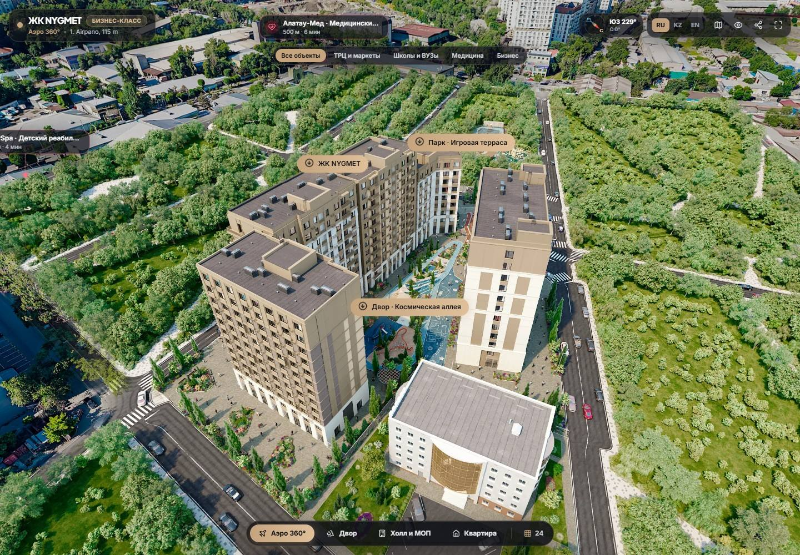
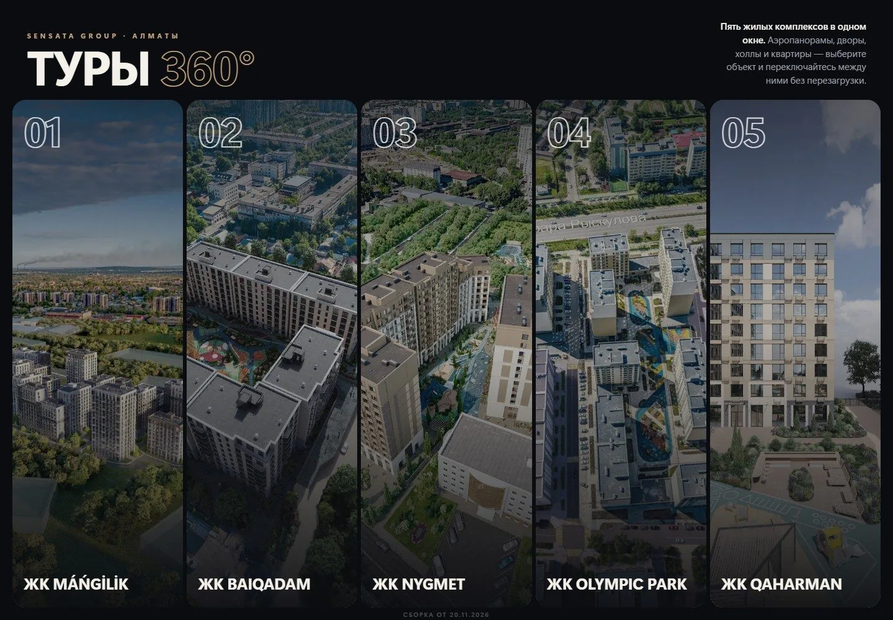
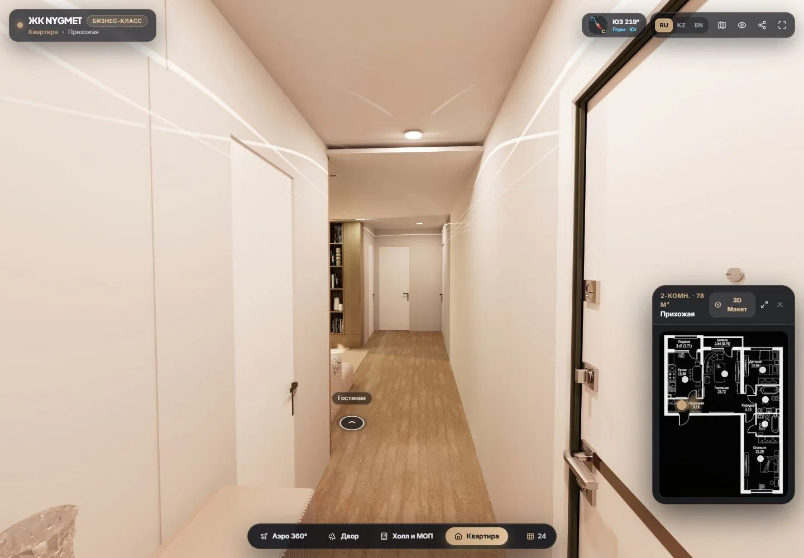
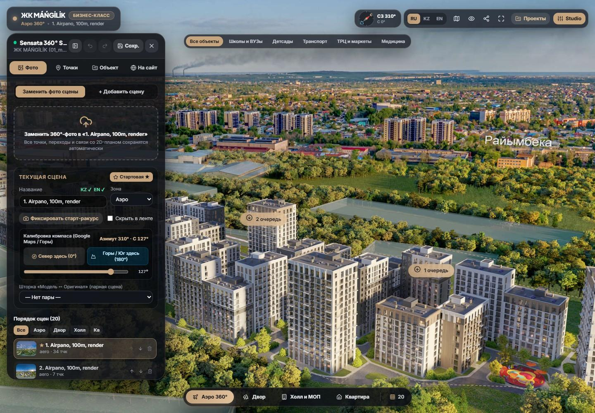

Движок 3D-туров и редактор
Sensata 360°
Свой WebGL-движок туров 360° для пяти ЖК и редактор Studio.

Аэропанорама ЖК NYGMET в собственном движке: метки, фильтры инфраструктуры и переключатель зон
О проекте
Собственный движок виртуальных туров на Three.js вместо прежней сборки на Panotour: аэропанорамы, дворы, холлы и квартиры пяти жилых комплексов Sensata Group открываются в одном окне без перезагрузки. К движку сделан Windows-редактор Sensata 360° Studio: замена панорам с сохранением точек, расстановка меток прямо на сфере, экспорт и подписанная публикация на хост заказчика. Панорамы и рендеры предоставлены заказчиком.
Что внутри
- Переходы аэро → двор → холл → квартира без перезагрузки
- Метки инфраструктуры, схема двора и планировка с точками комнат
- RU / KZ / EN и встраивание в сайты на Тильде
- Редактор Studio для Windows: установщик, экспорт и откат публикаций
Экраны проекта





